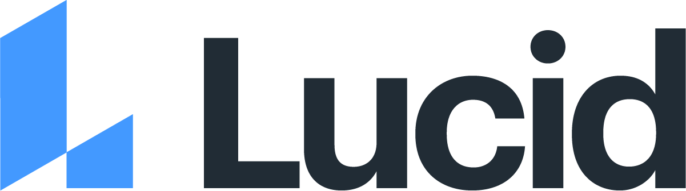
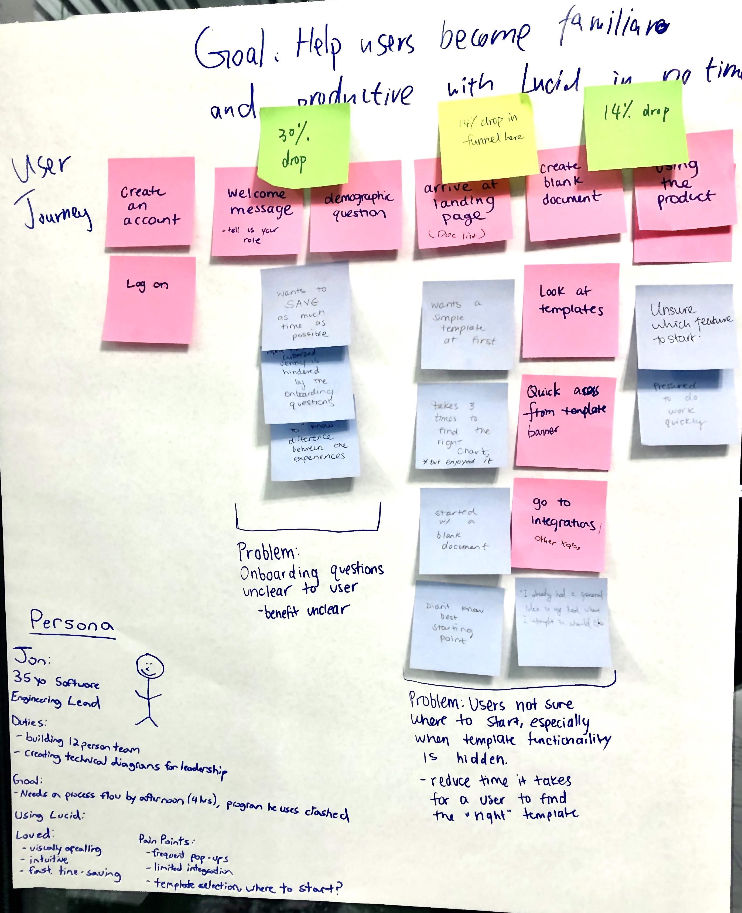
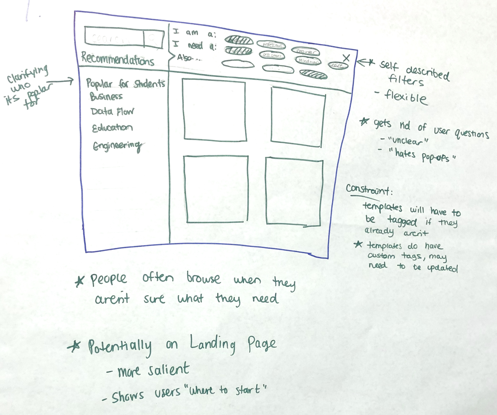
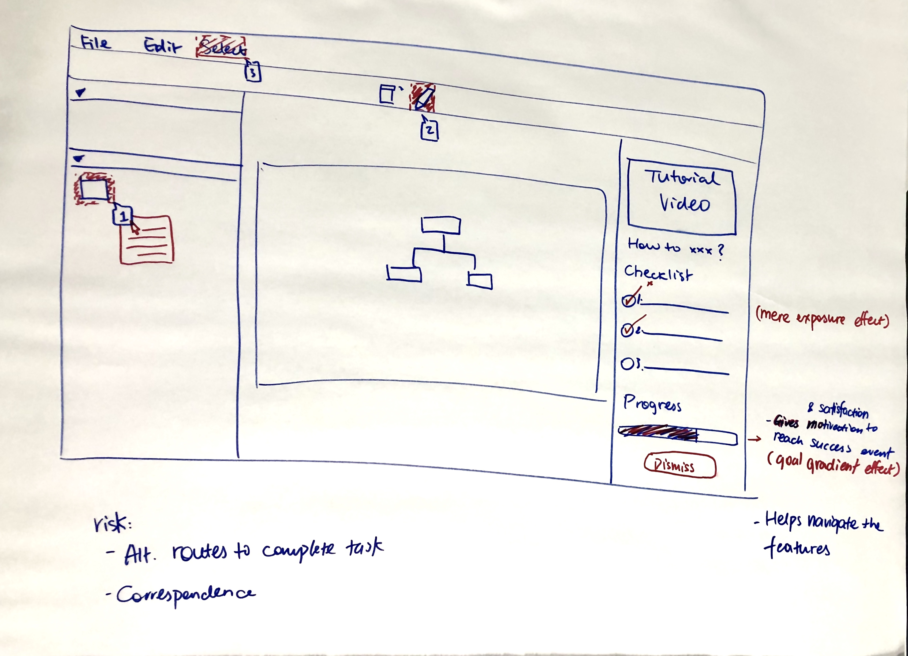

Winning designs of onboarding features for LucidChart
Team-based design jam
Fall 2019 (3 hours)
Knowledge synthesis, ideation, wireframes
User journey maps, personas, low-fidelity wireframing
There is user loss across every step of the conversion funnel, from creating an account to a success event (i.e., sharing, downloading or printing a document). Lucid is redeisgning the onboarding experience to improve user conversion and satisfaction.
We were provided with some statistics, an interview transcript and user commments to better understand user context and discover pain points of the onboarding experience.
We decided to create a user journey map, summarizing two major problems--unclear personalization questions and difficulting navigating the document list . We also created a persona, identifying the strongest need--time efficiency.
We built an affinity wall for solution ideas to the two major problems we identified. Our ideas evolved from completely abandoning the personalization step, to giving more flexibility of choice. We also pondered over how to prioritize the turorial feature without overwhelming pop-up windows.
The first design allows users to self-select their roles and chart types and/or to browse templates by category each time they land in the application. It works with the fluid roles and needs of industry professionals, and template recommendations can be built upon exisitng tags and machine learning algorithms.
The second design utilizes a checklist and progress bar to psychologically motivate initial guided engagement with the editor. Features in each step are highlighted and further instructions are shown when hovered over.
 Besides winning, the important lesson I learned is that it is a UX designer's responsibility to fully consider and communicate the risks and feasibility--the technological and business constraints--of a design.